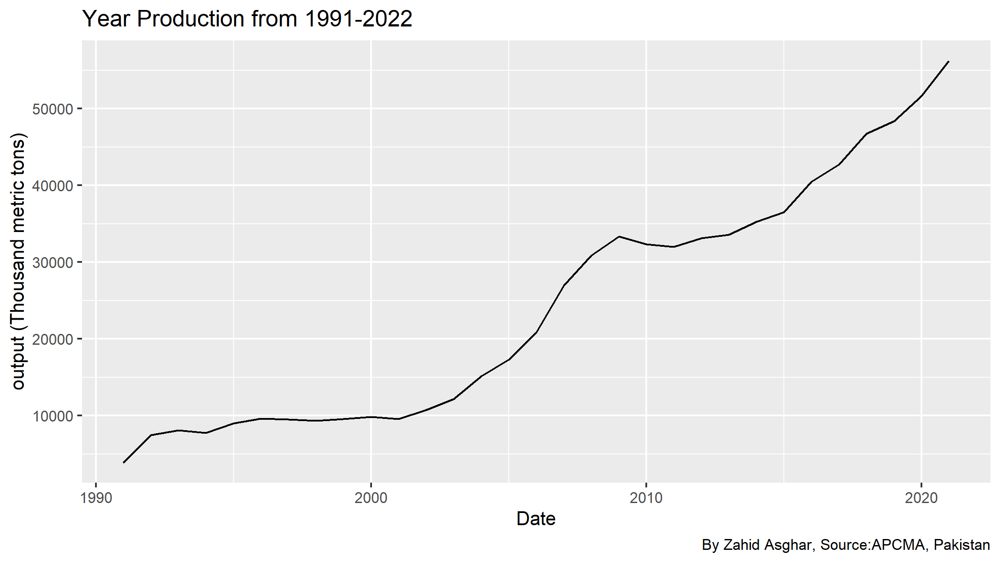
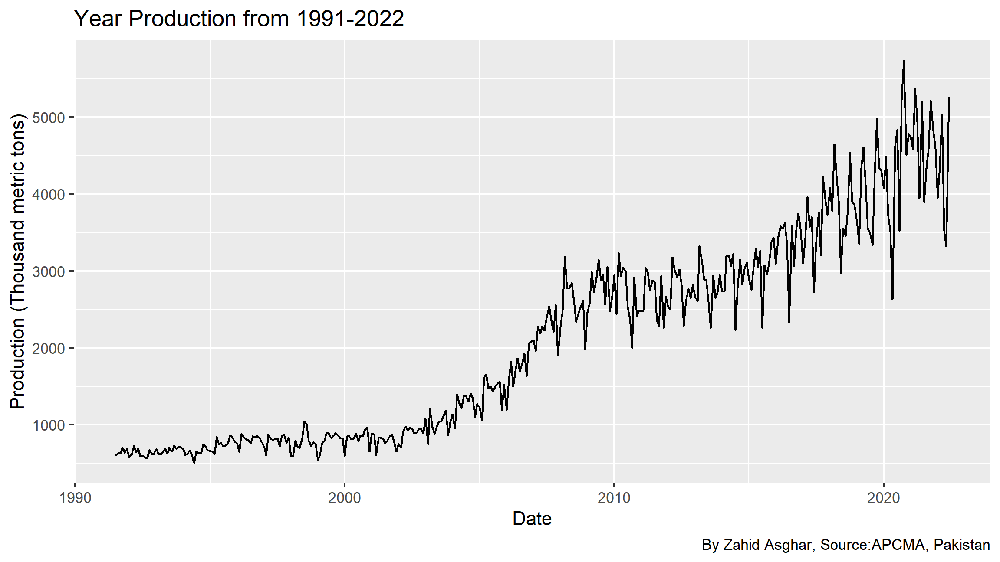

library(tidyverse)
library(lubridate)
library(readr)
library(readxl)
library(collapse)
library(kableExtra)
library(dynlm)
library(forecast)
library(stargazer)
library(scales)
library(xts)
library(urca)
library(tsibble)
library(fpp2)
library(fpp3)
library(ggthemes)
library(DT)
library(fable)
library(fabletools)Beautiful Presentations and Reports with Quarto in R
Cement Production
We have data from Cement Manufacturers Association. Lets explore this data as follows:
Read data
library(readr) # To load data from csv file, if one needs to load data from excel, then use excel file
cement<-read_csv("data/cement.csv")
glimpse(cement)
## Rows: 1,116
## Columns: 6
## $ Date <chr> "07/1991", "07/1991", "07/1991", "08…
## $ `Series Name` <chr> "Total Cement Sales", "Domestic Ceme…
## $ Output <dbl> 599, 599, NA, 632, 632, NA, 633, 633…
## $ Unit <chr> "Thousand Metric Ton", "Thousand Met…
## $ `Observation Status` <chr> "Normal", "Normal", "Missing value",…
## $ `Observation Status Comment` <lgl> NA, NA, NA, NA, NA, NA, NA, NA, NA, …Selecting and Renaming variables
cement<-cement %>% rename(Category=`Series Name` )
#cement<-ts(cement, frequency = 12, start=c(1991,7))
#cement
#cement<-cement %>% mutate(Month=yearmonth(Date)) %>% as_tsibble(index = Month)
cement<-cement %>% filter(Category=="Total Cement Sales") # Select only Total Cement Sales
cement$Date<-my(cement$Date) # Formating required
cement$Date<-as_date(cement$Date,format="%Y-%m")
#cement<-tsibble(cement)
cementcement$year<-year(cement$Date)
cement#cement<-tsibble(cement)Annual cement sale
What happens if year 2022 is included?
Why annual is less informative?
Monthly cement production
Labels, data source, theme
p1+labs(x="Date",y="output (Thousand metric tons)", title = "Year Production from 1991-2022", caption = "By Zahid Asghar, Source:APCMA, Pakistan")
pm+labs(x="Date",y="Production (Thousand metric tons)", title = "Year Production from 1991-2022", caption = "By Zahid Asghar, Source:APCMA, Pakistan")
Last 10 years data
Forecasting
ARIMA models
## Series: cement$Output
## ARIMA(4,1,1) with drift
##
## Coefficients:
## ar1 ar2 ar3 ar4 ma1 drift
## 0.137 -0.106 0.082 -0.169 -0.83 10.54
## s.e. 0.064 0.059 0.059 0.057 0.04 2.67
##
## sigma^2 = 100902: log likelihood = -2661
## AIC=5337 AICc=5337 BIC=5364
##
## Training set error measures:
## ME RMSE MAE MPE MAPE MASE ACF1
## Training set -0.403 315 202 -2.99 10.1 0.811 -0.00574Seasonal Plot
Monthly Analysis
Lag Plots
Shiny Interactive View
library(seasonalview)
library(shiny)
#cement_prod<-ts(data = cement$Output,frequency = 12, start=c(1991,7))
#view(seas(cement_prod))quarto render cement.qmd --to pdf